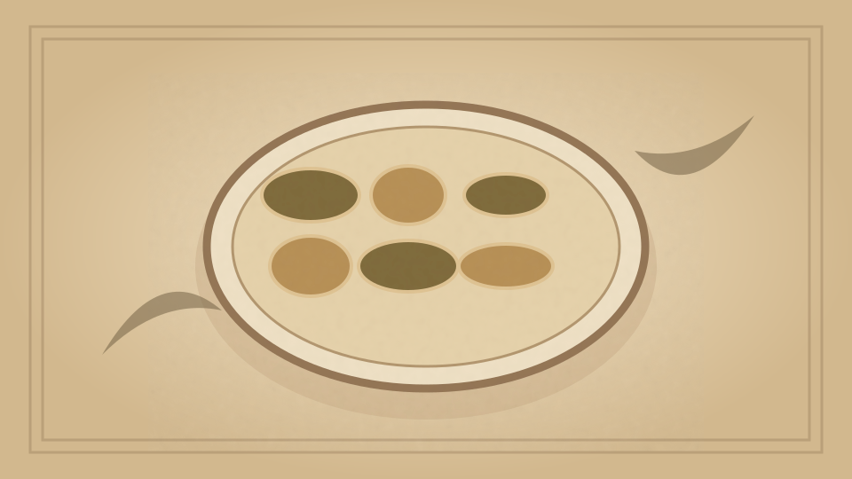

1910 · Fannie Merritt Farmer · SOUPS
Potage à la Reine
The Boston Cooking-School Cook Book

Historical Recipe
The following text is extracted from the 1910 edition, retaining historical terminology and quantities.
Original Ingredients & Directions
4 cups White Stock III
½ teaspoon peppercorns
1 stalk celery
1 slice onion
½ tablespoon salt
Yolks 3 “hard-boiled” eggs
⅓ cup cracker crumbs
Breast meat from a boiled chicken
2 cups scalded milk
½ cup cold milk
3 tablespoons butter
3 tablespoons flour
Cook stock with seasonings twenty minutes. Rub yolks of eggs through sieve. Soak cracker crumbs in cold milk until soft; add to eggs. Chop meat and rub through sieve; add to egg and cracker mixture. Then pour milk on slowly, and add to strained stock; boil three minutes. Bind with butter and flour cooked together.
Automatically extracted transcription; editorial verification pending. Historical instructions may not meet modern food-safety standards.